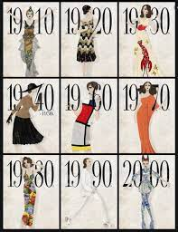

O sec 20
Historia da mentade do sec 20 na historia Francesa e conturbado, a França foi de um grande imperio a um dominio, uma republica falinda, isso além de mexer na sociedade, cultura francesa e claro com a moda. nesse projeto trabalharemos a moda e a sociedade francesa durante o incio e meio do 20.
Para retratarmos sobre a moda do inicio do sec 20 dividiremos eles por decadas!